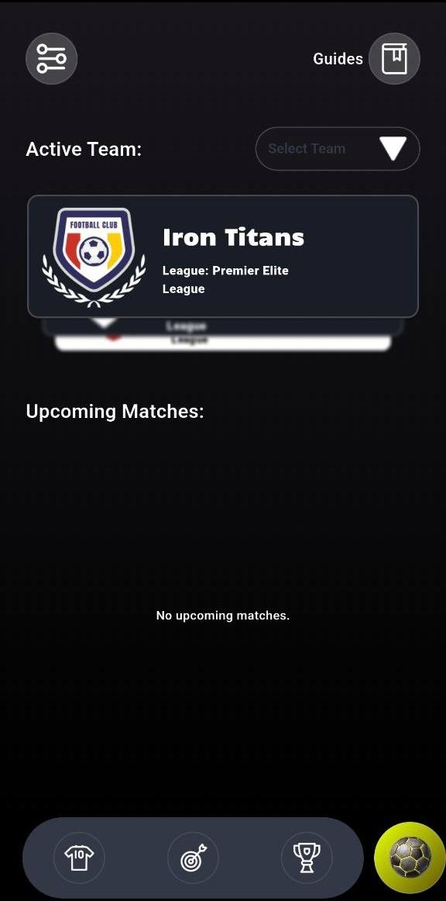
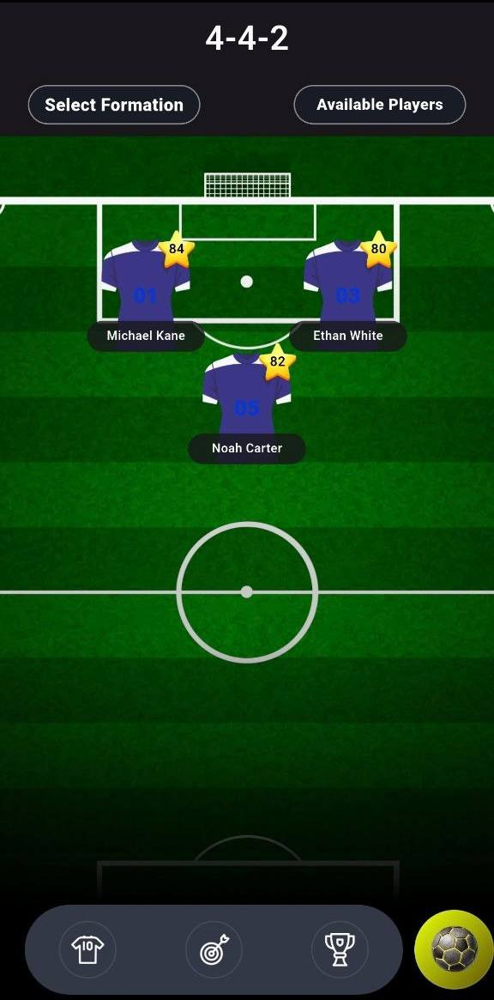
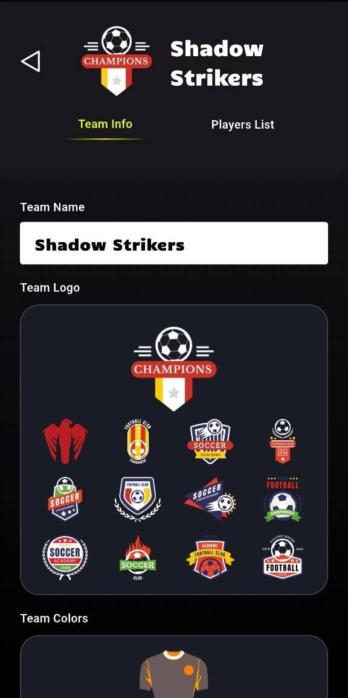
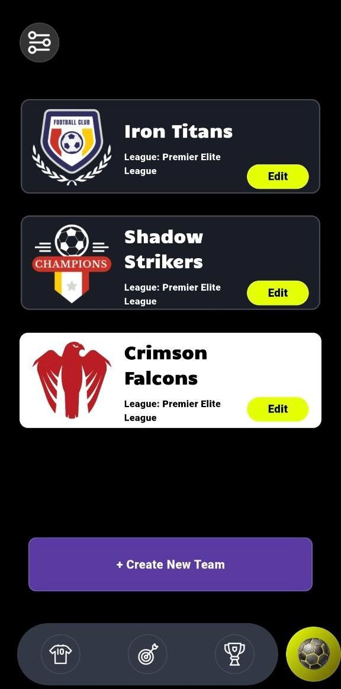
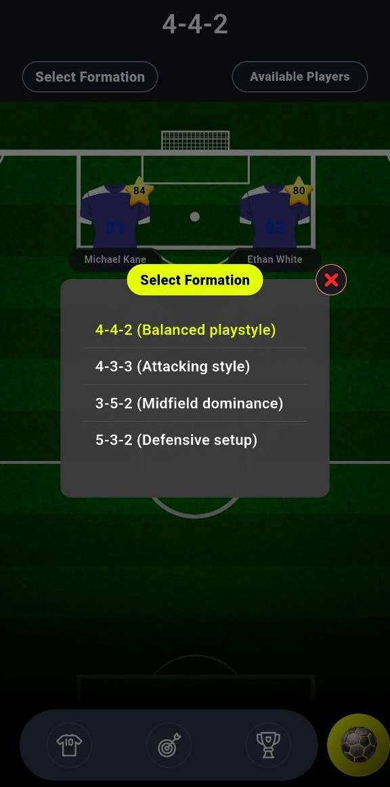
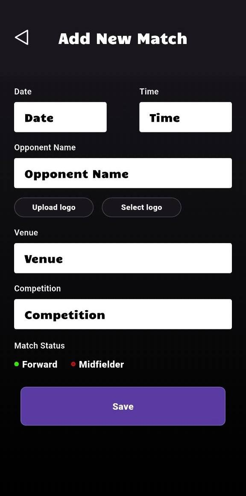
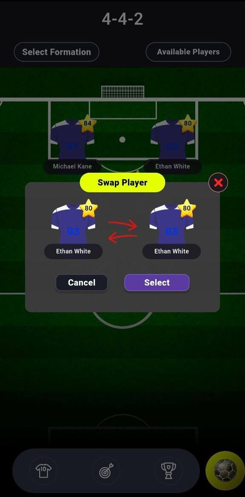
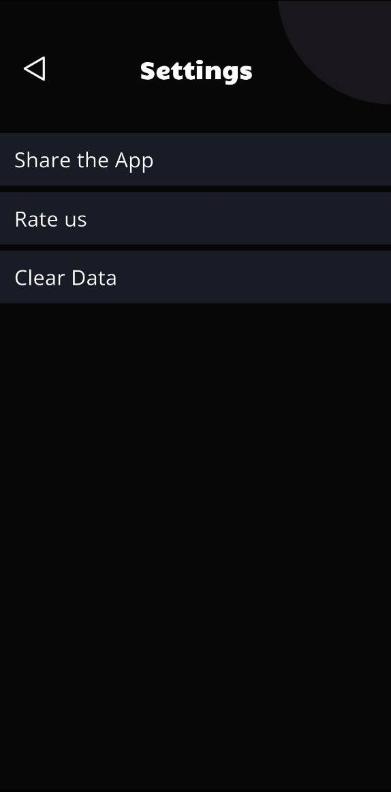
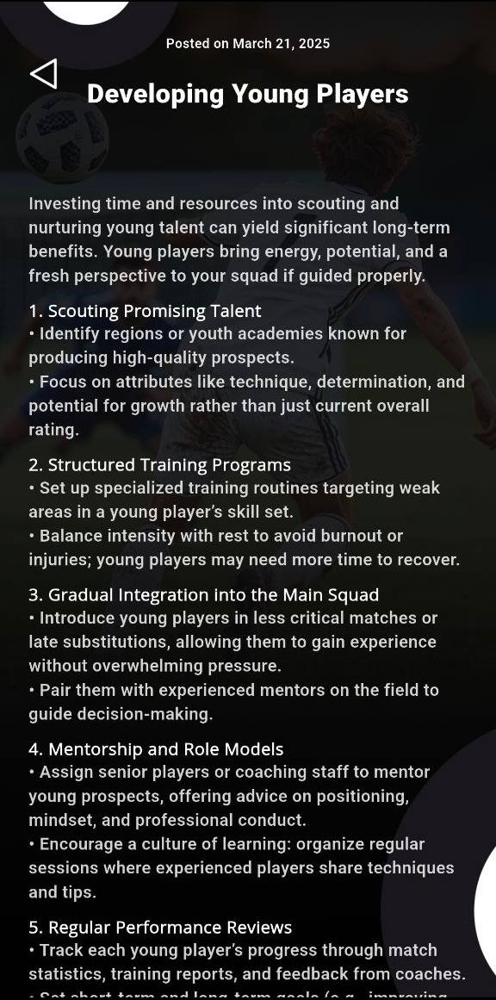

Build your squad. Shape the system. Manage every match with clarity.
DryKaiser is built for football planning and team organization. Manage active squads, edit team identity, switch formations, prepare lineups, add future fixtures, and keep tactical guides available inside one focused mobile interface.



Formation logic
Move from squad setup into tactical structure with formation selection and swaps.
Club control
Teams, upcoming matches, guides, and settings stay within one consistent flow.
DryKaiser feels like a private coach console, not a generic landing page for another sports app.
Main features
Everything centers around control and structure
Active team dashboard
The main screen highlights the currently selected team and upcoming fixtures so users can stay oriented immediately.
Multi-team management
Create and edit several teams, switch active squads, and keep different club identities separated inside one app.
Formation builder
Tactical layouts can be adjusted with formation presets, player placement, and swap actions from one tactical view.
Match creation
Add new fixtures with date, time, opponent, venue, competition, and match details in a structured match form.
Guide system
Practical tactical articles support development, player education, and coaching knowledge directly in the same product.
Simple operational settings
Share, rate, and clear data from a clean settings screen that stays aligned with the rest of the app structure.
Showcase
How the app is structured on screen
Welcome into a tactical environment
The opening screen introduces the product as a football management tool, not a fan app. The first impression is darker, stronger, and more focused on leadership.
Active team and quick context
Team identity and upcoming matches are visible on the home screen so the user never loses track of the active squad.
Team list management
Multiple club cards can be reviewed and edited with fast access to a new team creation flow.

Edit identity and club visuals
The editor screen connects team info, logo selection, and visual setup to a more branded club experience.

Formation screen
Tactical structure becomes visual with a pitch layout, player cards, and role positions shown directly on the field.
Modals for tactical actions
Formation presets and player swap flows are handled in focused modal windows instead of jumping into unrelated screens.


Workflow
01
02
03
04
05
From team setup to training material
Choose a team
Switch active squads and keep the correct team context.
Edit details
Control name, visuals, and basic identity inside the app.
Shape the system
Move from squad overview into tactical structure.
Plan fixtures
Add upcoming matches with all essential details.
Use guides
Support decisions with structured football advice.
Current step
Select or create a team
The app starts with multi-team management so users can keep club identities, squads, and projects separated.
Guides
Knowledge stays inside the product
Training content sits next to the tactical tools
DryKaiser does not stop at formations and match setup. The guide system expands the product with written coaching material about youth development, defense, and team management.


Reviews
The product feeling
★★★★★
“DryKaiser feels more like a staff room tool than a simple football app. Teams, lineups, match prep, and tactical notes all connect naturally.”
★★★★★
“The formation screens give the product a real coaching feel because the tactical structure is visible, not hidden behind text-only menus.”
★★★★★
“I like that the guides are inside the same app. It makes the experience feel complete instead of split between planning and learning.”
Download
Take tactical team management with you
Use DryKaiser to manage teams, shape formations, plan fixtures, and keep useful tactical guides available on mobile whenever you need them.